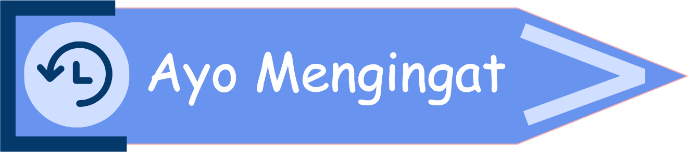
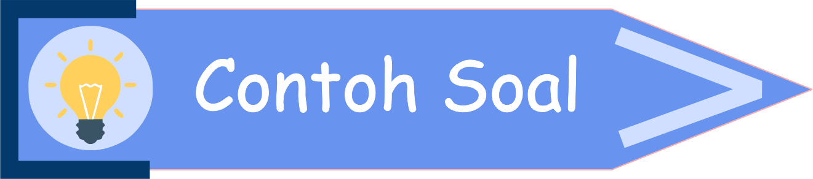
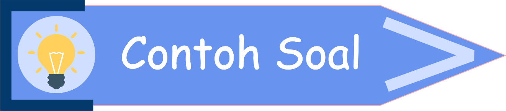

1.3 MENYATAKAN SUATU HIMPUNAN


*catatlah ke dalam buku catatanmu 😄
Apa perbedaan dari kata "antara" dan "dari ... sampai ..."?
Pada bab himpunan, kamu akan sering menjumpai soal yang meminta kamu menyebutkan anggota dari suatu himpunan bilangan. Contoh :

Perhatikanlah pembahasan pada video animasi di bawah ini!

Pelajarilah contoh soal berikut!
Masih ingatkah kalian dengan simbol <, >, ≤, dan ≥?
Misalkan :
| Simbol | Keterangan |
|---|---|
| < | kurang dari |
| > | lebih dari |
| ≤ | kurang dari sama dengan |
| ≥ | lebih dari sama dengan |
- bilangan asli kurang dari 3. Ini artinya angka 3 tidak ikut disebutkan.
- bilangan asli lebih dari 5. Ini artinya angka 5 tidak ikut disebutkan.
- bilangan asli kurang dari sama dengan 3. Ini artinya angka 3 ikut disebutkan.
- bilangan asli lebih dari sama dengan 5. Ini artinya angka 5 ikut disebutkan.
*catatlah ke dalam buku catatanmu 😄
Pada bab himpunan, kamu akan sering menjumpai soal yang meminta kamu menyebutkan anggota dari suatu himpunan bilangan. Contoh :
-
A adalah himpunan bilangan asli antara 1 dan 5
Karena ada kata antara, maka 1 < ... < 5. Sehingga anggota himpunan A adalah 2, 3, dan 4 (angka 1 dan 5 tidak ikut disebutkan). -
B adalah himpunan bilangan asli dari 5 sampai 8
Karena ada kata dari ... sampai ..., maka 5 ≤ ... ≤ 8. Sehingga anggota himpunan B adalah 5, 6, 7, dan 8 (angka 5 dan 8 ikut disebutkan).
Perhatikanlah pembahasan pada video animasi di bawah ini!
 Petunjuk (klik untuk menyembunyikan petunjuk)
Petunjuk (klik untuk menyembunyikan petunjuk)- Tekan icon
 untuk memulai video animasi di bawah.
untuk memulai video animasi di bawah. - Tekan untuk membuat video menjadi full screen.

Pelajarilah contoh soal berikut!
Diketahui A adalah himpunan bilangan asli kurang dari sama dengan 5. Nyatakanlah himpunan tersebut dengan metode deskripsi, metode bersyarat, dan metode tabulasi!
Penyelesaian :
Penyelesaian :
-
Metode deskripsi
A = {bilangan asli kurang dari sama dengan 5} -
Metode bersyarat
A = {x | x ≤ 5, x ∈ bilangan asli} -
Metode tabulasi
A = {1, 2, 3, 4, 5}
Diketahui G adalah himpuan bilangan genap kurang dari 10. Nyatakanlah himpunan G dengan metode deskripsi, metode bersyarat, dan metode tabulasi!
Penyelesaian :
Penyelesaian :
-
Metode deskripsi
G = {bilangan genap kurang dari 10} -
Metode bersyarat
G = {x | x < 10, x ∈ bilangan genap} -
Metode tabulasi
G = {2, 4, 6, 8}